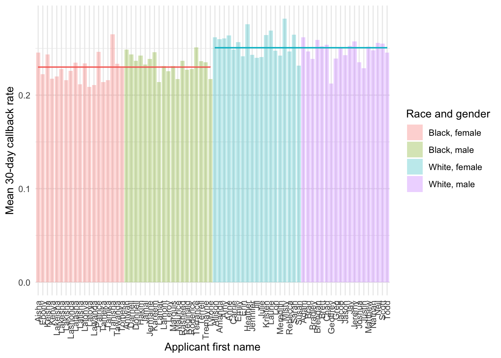
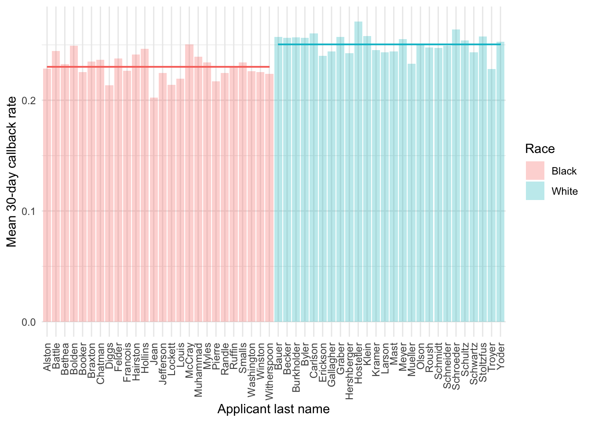

rm(list = ls())
# hide warnings
options(warn = -1)
suppressPackageStartupMessages(library(ggplot2))
suppressPackageStartupMessages(library(tidyverse))
suppressPackageStartupMessages(library(dplyr))
suppressPackageStartupMessages(library(stargazer))
suppressPackageStartupMessages(library(readxl))
suppressPackageStartupMessages(library(fixest))
suppressPackageStartupMessages(library(usmap))
suppressPackageStartupMessages(library(lfe))
suppressPackageStartupMessages(library(lmtest))
suppressPackageStartupMessages(library(sandwich))
suppressPackageStartupMessages(library(multiwayvcov))
data <- readRDS("dataset/cleaned_data.rds")This post replicates the table 1 and 2 in the paper in R.
Note: Experiment data is from 2019-2021, while census data is from 2019-2024. The following code aggregate application level data to the state level and merge it with the census data to calculate the proportion of applications by state.
This exercise will help us understand the background of the data on a state-by-state basis and explore the relationship between callback rates and other variables at the state level.
Data Background and Context
The dataset originates from the landmark study “Systemic Discrimination Among Large U.S. Employers” (Kline, Rose, and Walters, 2022).
- Research Questions: The study explores whether discrimination is endemic to particular firms, investigates firm-level heterogeneity in callback rates, and considers the potential impact of industry, geographic location, and other structural factors.
The census data was retrieved from the United States Census Bureau at this link: https://www.census.gov/data/tables/time-series/demo/popest/2020s-state-total.html
for(k in 1:4) {
data[[paste0("region4_", k)]] <- as.integer(data$region4 == k)
}
for(k in 1:5) {
data[[paste0("wave", k)]] <- as.integer(data$wave == k)
}Table 1: Summary Statistics
vars <- c("female", "over40", "lgbtq_club", "academic_club", "political_club",
"gender_neutral_pronouns", "same_gender_pronouns", "associates",
"region4_1", "region4_2", "region4_3", "region4_4",
"wave1", "wave2", "wave3", "wave4", "wave5",
"cb", "call_cb", "email_cb", "text_cb", "any_cb_0_14", "any_cb_15_30")
data <- data %>%
mutate(balanced_group = if_else(balanced >= 1, "Balanced", "All Firms"),
race = if_else(black == 1, "Black", "White"))
summary_table <- data %>%
filter(balanced >= 0) %>%
group_by(balanced_group, race) %>%
summarise(across(all_of(vars),
list(mean = ~mean(. , na.rm = TRUE),
sd = ~sd(., na.rm = TRUE),
n = ~sum(!is.na(.))),
.names = "{col}_{fn}"),
.groups = "drop")
summary_table# A tibble: 4 × 71
balanced_group race female_mean female_sd female_n over40_mean over40_sd
<chr> <chr> <dbl> <dbl> <int> <dbl> <dbl>
1 All Firms Black 0.506 0.500 9141 0.541 0.498
2 All Firms White 0.492 0.500 9134 0.538 0.499
3 Balanced Black 0.498 0.500 32665 0.533 0.499
4 Balanced White 0.500 0.500 32703 0.534 0.499
# ℹ 64 more variables: over40_n <int>, lgbtq_club_mean <dbl>,
# lgbtq_club_sd <dbl>, lgbtq_club_n <int>, academic_club_mean <dbl>,
# academic_club_sd <dbl>, academic_club_n <int>, political_club_mean <dbl>,
# political_club_sd <dbl>, political_club_n <int>,
# gender_neutral_pronouns_mean <dbl>, gender_neutral_pronouns_sd <dbl>,
# gender_neutral_pronouns_n <int>, same_gender_pronouns_mean <dbl>,
# same_gender_pronouns_sd <dbl>, same_gender_pronouns_n <int>, …Table 2: Effect of Resume Characteristics on Contact Rates
data_all <- data %>% filter(balanced >= 0) %>%
mutate(wave = factor(wave),
region4 = factor(region4))
data_bal <- data %>% filter(balanced >= 1) %>%
mutate(wave = factor(wave),
region4 = factor(region4))
reg_formula <- as.formula("cb ~ black + female + over40 + political_club + academic_club +
lgbtq_club + same_gender_pronouns + gender_neutral_pronouns +
associates + wave + region4")
# Linear Probability Model (LPM)
fit_lpm_all <- lm(reg_formula, data = data_all)
# Clustered standard errors by job_id
cl_vcov_all <- cluster.vcov(fit_lpm_all, data_all$job_id)
lpm_all_coefs <- coeftest(fit_lpm_all, vcov = cl_vcov_all)
# Logit Model for all firms
fit_logit_all <- glm(reg_formula, data = data_all, family = binomial(link = "logit"))
cl_vcov_logit_all <- cluster.vcov(fit_logit_all, data_all$job_id)
logit_all_coefs <- coeftest(fit_logit_all, vcov = cl_vcov_logit_all)
#print(lpm_all_coefs)
#print(logit_all_coefs)# (LPM) for balanced sample
fit_lpm_bal <- lm(reg_formula, data = data_bal)
cl_vcov_bal <- cluster.vcov(fit_lpm_bal, data_bal$job_id)
lpm_bal_coefs <- coeftest(fit_lpm_bal, vcov = cl_vcov_bal)
# Logit Model for balanced sample
fit_logit_bal <- glm(reg_formula, data = data_bal, family = binomial(link = "logit"))
cl_vcov_logit_bal <- cluster.vcov(fit_logit_bal, data_bal$job_id)
logit_bal_coefs <- coeftest(fit_logit_bal, vcov = cl_vcov_logit_bal)
#print(lpm_bal_coefs)
#print(logit_bal_coefs)stargazer(fit_lpm_all, fit_logit_all, fit_lpm_bal, fit_logit_bal,
se = list(sqrt(diag(cl_vcov_all)),
sqrt(diag(cl_vcov_logit_all)),
sqrt(diag(cl_vcov_bal)),
sqrt(diag(cl_vcov_logit_bal))),
#column.labels = c("LPM", "Logit", "LPM", "Logit"),
dep.var.labels = "Call Back Prob.",
covariate.labels = c("Black", "Female", "Over 40", "Political club",
"Academic club", "LGBTQ club", "Same-gender pronouns",
"Gender-neutral pronouns", "Associate degree",
"Wave 2", "Wave 3", "Wave 4", "Wave 5",
"Midwest", "South", "West"),
#omit = "wave|region4",
#omit.labels = c("Wave 1", "Northeast"),
star.cutoffs = c(0.10, 0.05, 0.01),
notes = "Clustered standard errors by Job ID",
type = "text")
=======================================================================================================
Dependent variable:
-------------------------------------------------------------------------------
Call Back Prob.
OLS logistic OLS logistic
(1) (2) (3) (4)
-------------------------------------------------------------------------------------------------------
Black -0.021*** -0.115*** -0.022*** -0.123***
(0.002) (0.009) (0.002) (0.011)
Female 0.0002 0.001 -0.0002 -0.002
(0.003) (0.017) (0.003) (0.019)
Over 40 -0.006** -0.033** -0.005 -0.027
(0.003) (0.017) (0.003) (0.019)
Political club -0.002 -0.010 -0.003 -0.017
(0.007) (0.041) (0.008) (0.046)
Academic club 0.010 0.052 0.006 0.028
(0.008) (0.041) (0.009) (0.046)
LGBTQ club -0.005 -0.029 -0.00004 -0.001
(0.005) (0.030) (0.006) (0.034)
Same-gender pronouns -0.014* -0.077* -0.013 -0.068
(0.007) (0.041) (0.008) (0.047)
Gender-neutral pronouns -0.010 -0.057 -0.017** -0.095**
(0.008) (0.042) (0.009) (0.048)
Associate degree 0.001 0.007 0.003 0.014
(0.003) (0.017) (0.003) (0.019)
Wave 2 0.054*** 0.318*** 0.051*** 0.302***
(0.011) (0.063) (0.012) (0.069)
Wave 3 0.010 0.062 0.017 0.102
(0.010) (0.065) (0.011) (0.072)
Wave 4 0.039*** 0.238*** 0.042*** 0.249***
(0.010) (0.064) (0.012) (0.071)
Wave 5 0.151*** 0.798*** 0.162*** 0.842***
(0.011) (0.061) (0.013) (0.067)
Midwest 0.063*** 0.323*** 0.045*** 0.230***
(0.012) (0.062) (0.014) (0.069)
South -0.030*** -0.170*** -0.040*** -0.221***
(0.010) (0.058) (0.012) (0.064)
West -0.027** -0.153** -0.039*** -0.216***
(0.011) (0.065) (0.013) (0.073)
Constant 0.207*** -1.358*** 0.219*** -1.292***
(0.011) (0.067) (0.013) (0.073)
-------------------------------------------------------------------------------------------------------
Observations 83,643 83,643 65,368 65,368
R2 0.024 0.024
Adjusted R2 0.024 0.024
Log Likelihood -45,164.010 -35,644.270
Akaike Inf. Crit. 90,362.010 71,322.540
Residual Std. Error 0.422 (df = 83626) 0.425 (df = 65351)
F Statistic 126.977*** (df = 16; 83626) 101.025*** (df = 16; 65351)
=======================================================================================================
Note: *p<0.1; **p<0.05; ***p<0.01
Clustered standard errors by Job IDFigure: Callbacks by applicant first name
df <- data
ols <- felm(cb ~ black + white - 1|0|0|job_id, data = df)
ols2 <- felm(cb ~ factor(firstname) - 1|0|0|job_id, data = df)
coef <- as.data.frame(summary(ols2)$coefficients)
coef <- coef %>% rownames_to_column(var='coef') %>%
extract(coef, "firstname", "\\(firstname\\)([A-Za-z]+)", remove=TRUE)
coef <- df %>% select(race,gender,firstname) %>% distinct %>%
right_join(coef, by='firstname') %>% arrange(race,gender,firstname) %>%
mutate(order=row_number())
coef[,1:3]<- lapply(coef[, 1:3], as.factor)
coef <- coef %>% mutate("Race and gender"=case_when(
race == "Black" & gender == "Female" ~ "Black, female",
race == "Black" & gender == "Male" ~ "Black, male",
race == "White" & gender == "Female" ~ "White, female",
race == "White" & gender == "Male" ~ "White, male"))
plot_A3 <- ggplot(data = coef,
aes(x = reorder(factor(firstname), order), y = Estimate, fill = `Race and gender`)) +
geom_bar(stat = 'identity', alpha = .3) +
theme_minimal() +
theme(axis.text.x = element_text(angle = 90, vjust = 0.5, hjust = 1)) +
labs(
x = "Applicant first name",
y = "Mean 30-day callback rate",
fill = "Race and gender"
) +
geom_segment(aes(x = 1, y = coef(ols)['black'], xend = 38, yend = coef(ols)['black']),
show.legend = FALSE, color = "#F8766D") +
geom_segment(aes(x = 39, y = coef(ols)['white'], xend = 76, yend = coef(ols)['white']),
show.legend = FALSE, color = "#00BFCF")
print(plot_A3, height = 5, width = 8)
This figure shows mean contact rates by applicant first name, organized by race and gender group. The horizontal bars show race group mean contact rates. F-tests and p-values come from joint tests of the hypothesis that contact rates are equal across names separately by race and gender group.
ols2 <- felm(cb ~ factor(lastname) - 1 | 0 | 0 | job_id, data = df)
coef <- as.data.frame(summary(ols2)$coefficients)
coef <- coef %>%
rownames_to_column(var = 'coef') %>%
extract(coef, "lastname", "\\(lastname\\)([A-Za-z]+)", remove = TRUE)
coef <- df %>%
select(race, lastname) %>%
distinct() %>%
right_join(coef, by = "lastname") %>%
arrange(race, lastname) %>%
mutate(order = row_number())
plot_A4 <- ggplot(data = coef,
aes(x = reorder(factor(lastname), order), y = Estimate, fill = factor(race))) +
geom_bar(stat = 'identity', alpha = .3) +
theme_minimal() +
theme(axis.text.x = element_text(angle = 90, vjust = 0.5, hjust = 1)) +
labs(
x = "Applicant last name",
y = "Mean 30-day callback rate",
fill = "Race"
) +
geom_segment(aes(x = 1, y = coef(ols)['black'], xend = 26, yend = coef(ols)['black']),
show.legend = FALSE, color = "#F8766D") +
geom_segment(aes(x = 27, y = coef(ols)['white'], xend = 52, yend = coef(ols)['white']),
show.legend = FALSE, color = "#00BFCF")
print(plot_A4, height = 5, width = 8)
ggsave(plot_A4, filename = "output/plot_A4.png", height = 5, width = 8)This figure shows mean contact rates by applicant last name, organized by race. The horizontal bars show race group mean contact rates. F-tests and p-values come from joint tests of the hypothesis that contact rates are equal across names separately by race.